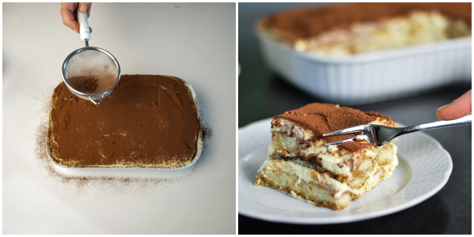

Leave in the tin until completely cool, then remove and serve.
Tiramisu
Tiramisu

Tiramisu
Ingredients
300g Savoiardi ladyfingers
500g mascarpone cheese cream
4 medium eggs
100g sugar
300g coffee (better if it's espresso)
2 tablespoons of rum or marsala
Cocoa powder unsweetened
Method
First of all, make the coffee. Now add 2 tbs of rum or Marsala wine (that’s optional. If you don’t like liqueurs or you are making tiramisu for children, don’t use it) then set aside and let it cool.
Separate egg whites from yolks and remember that in order to whip the egg whites pretty stiff there should not be any trace of yolk.
Take a bowl and whip the egg whites until stiff: you will get at it when the the egg whites will not move if you turn the bowl over. When ready, set aside.
Now in another bowl (or the clean same one) whisk the egg yolks with the sugar until pale and smooth, 3 to 5 minutes.
When ready add mascarpone cheese.
Whisk the cream slowly with the electric mixer. Now add stiffen egg whites.
Mix with a wooden spoon, from bottom to top. Mix slowly until it’s smooth and creamy..
Now dip quickly Savoiardi Ladyfingers into the coffee. IMPORTANT! Cookies should not engage too much coffee, otherwise your Tiramisu will turn out too soggy. Then place them in a ceramic or glass cooking pan.
Spread the mascarpone cream on top of the Savoiardi.
Add another layer of Savoiardi and then cover with more mascarpone cream.
Finally sprinkle with cocoa powder. Let rest 3 hours in the refrigerator before serving (even better if you make the tiramisu the day before, letting it to rest all night long in the fridge). You can add chocolate flakes on top according to taste.